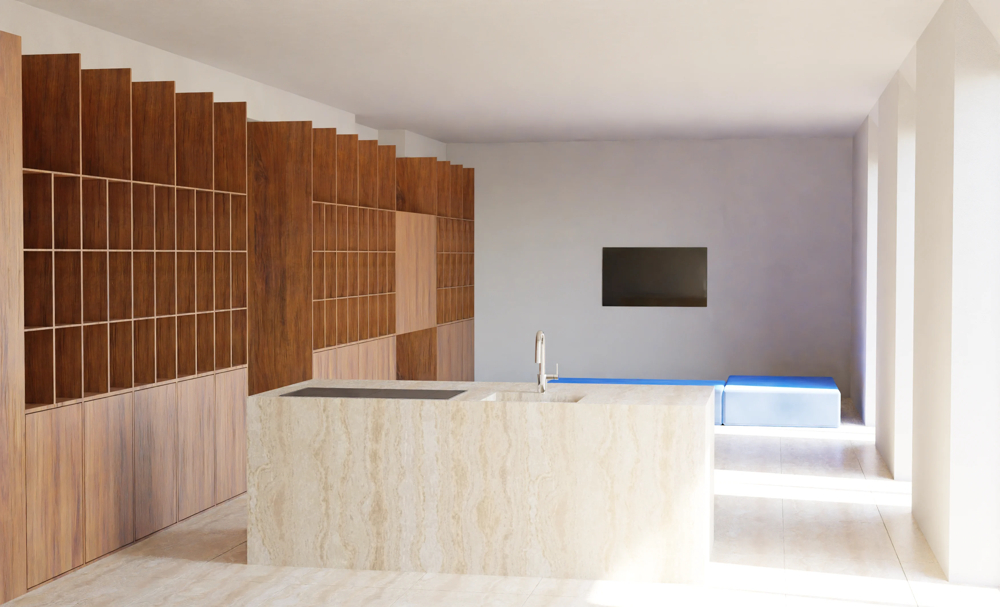
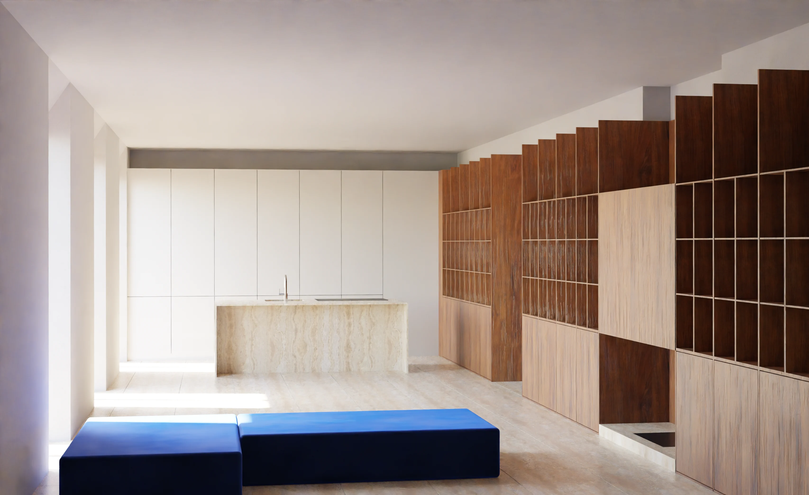
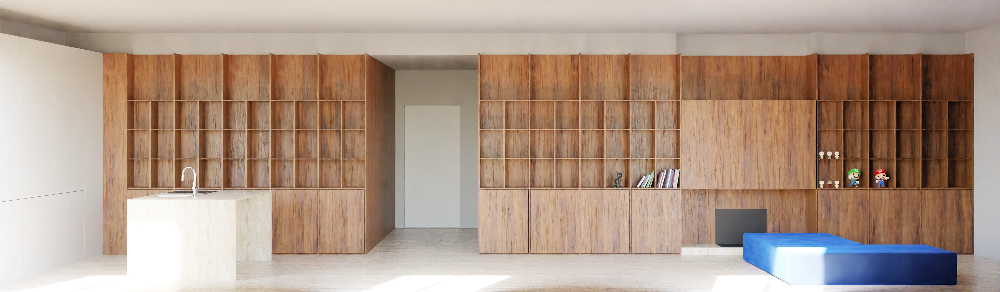

Questo appartamento, situato nella zona centrale di Montecatini Terme, all’interno di un palazzo del IXX secolo, era stato interamente ristrutturato negli anni ‘70 secondo i registri dell’epoca. La metratura di circa 140 mq era stata utilizzata efficacemente, fatta eccezione per il lungo corridoio con funzione di distribuzione alle camere, posizionato longitudinalmente, sfruttando il muro di spina. Accedendo ci si trovava in un ingresso non compartimentato, comunicante con la zona giorno. Quest’ultima consisteva in un living con camino, con affaccio su cortile interno, comunicante con secondo living, zona TV, che invece si affacciava sulla via pedonale. La zona pranzo, con cucina, situata dalla parte opposta rispetto al disimpegno d’ingresso, si affacciava invece su un secondo cortile interno. Le due camere avevano invece lo stesso affaccio del living TV, sulla via pedonale.
Il progetto si è basato, come di prassi, sull’analisi dei pregi e dei difetti di questa distribuzione ed è emersa subito la necessità di riservare l’affaccio principale alla zona giorno, creando un unico open space per la zona giorno e arretrando le camere lasciando a queste l’affaccio sui cortili, esteticamente meno piacevoli ma certamente più silenziosi. A livello di vani, è risultato necessario pensare di inserire un altro bagno, visto che l’unico presente, sebbene molto ampio, non era necessario a far fronte alle esigenze della famiglia, composta da tre persone. La nuova distribuzione è stata così pensata: l’ingresso, le cui pareti sono state sfruttate con duplice funzione contenitiva ed estetica tramite l’impiego di una boiserie, atta anche a mintigare le porte, ha adesso funzione di accesso a tutti gli ambienti, minimizzando in questo modo lo spazio distributivo. A destra e a sinistra si accede alle camere e al nuovo bagno, finestrato, posizionato al posto della vecchia cucina. Le camere hanno entrambe un loro spazio guardaroba, posizionato dalla parte opposta rispetto alle finestre per sfruttare al meglio lo spazio non sufficientemente aerato e illuimanto. Procedendo oltre si arriva alla grande zona giorno,illuminata da tre aperture a tutta altezza, in cui la cucina è posta in fondo, a destra, sulla parete del bagno preesistente, riorganizzato in modo da ottenere un antibagno con mobili contenitori. La cucina con isola è stata pensata in modo da non percepire immediatamente tutta quella serie di elementi come frigo, piano cottura ecc., permettendo in questo modo di integrarsi al meglio con il resto della zona giorno.
I materiali scelti, tutti naturali, hanno cromie calde e consistono nel travertino della pavimentazione, in grande formato, e nel legno delle boiserie e della grande scaffalatura longitudinale, atta ad inglobare anche il nuovo camino attraverso un gioco di pieni e vuoti. L’isola della cucina è rivestita in travertino, per creare una continuità con la pavimentazione, mentre la parte posteriore è in legno laccato bianco opaco, in modo da non interrompere trasversalmente le linee di fuga ottenute con la libreria.


